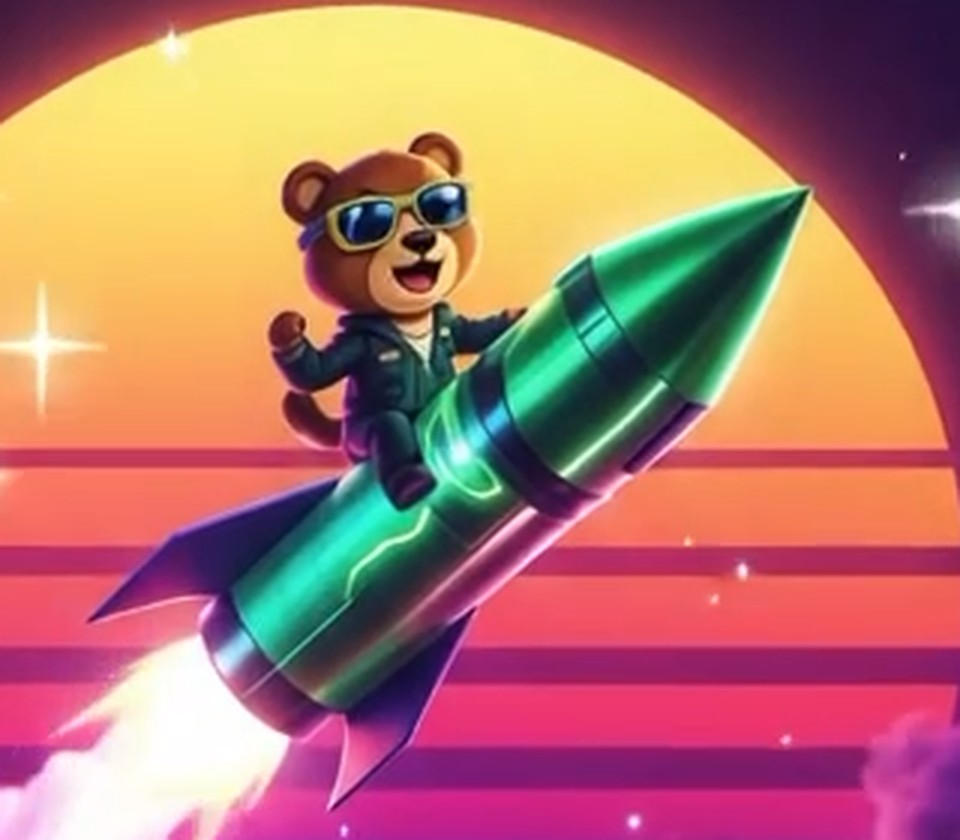
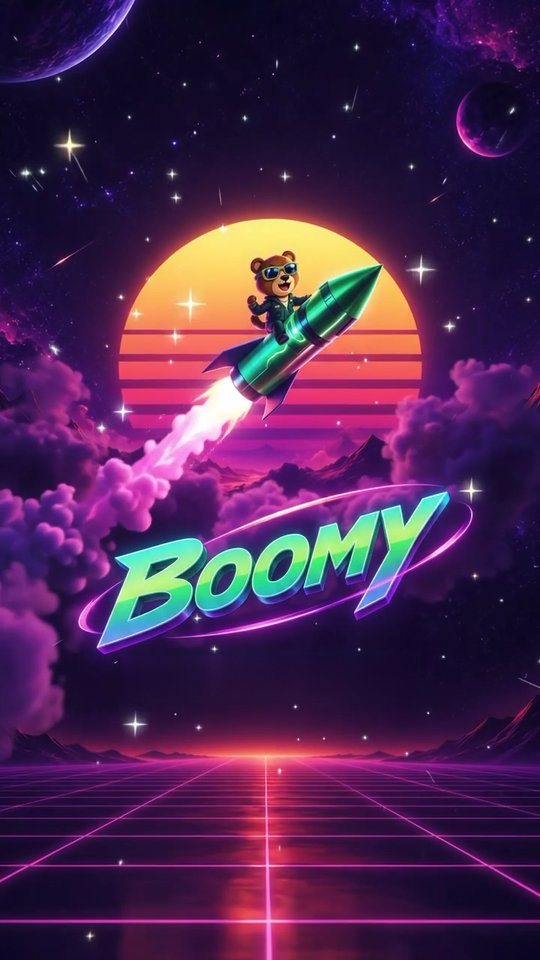
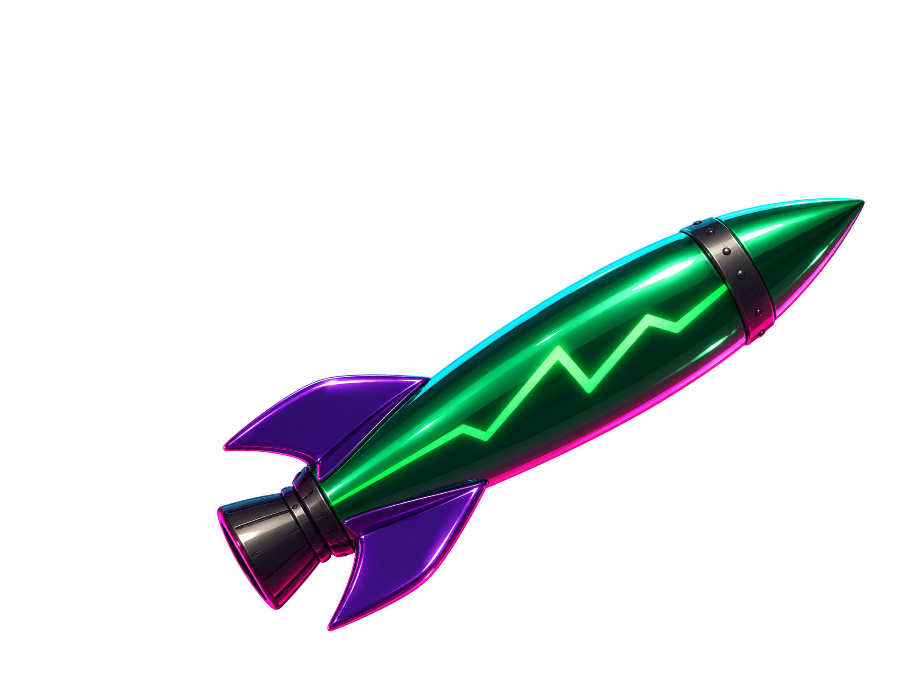

Медведь и ракета: что сгенерировать
Чтобы персонаж выглядел как на заставке, а не собранным из фигур, рисуем его генератором изображений, а игра потом анимирует готовые картинки: двигает тело, меняет головы с эмоциями, качает на парашюте. Готово: 2–10 и R1. Сейчас нужны две правки картинки R1: спокойный медведь (R2) и ракета без медведя (R4).
Сейчас: две правки картинки R1
Картинка R1 получилась отличной. Нос у ракеты был загнут вверх на 5°, его уже выпрямили: ниже выпрямленная основа. Каждую правку делайте от этой основы, а не от предыдущего результата: так ракета и кадр совпадут на всех картинках, и смена эмоции в игре не будет заметна как подмена.
 Основа: долгое нажатие → сохранить. Скачать файлом
Основа: долгое нажатие → сохранить. Скачать файлом
В чате генератора прикрепите основу и дайте промпт R2. Для R4 снова прикрепите основу (не результат R2). Если нос в ответе опять чуть загнётся, ничего страшного: игра выпрямляет его сама.
Edit the attached picture. Keep everything exactly the same: the rocket (its shape, its perfectly straight line, its angle, size, position and colours), the bear's position, size, body and legs, the framing and the plain white background. Change only his arms and his face: the raised arm comes down and both paws hold the rocket's dark riveted band, a calm, confident closed-mouth smile.
R4Ракета без медведя
ride-empty
Edit the attached picture: remove the bear completely. Keep the rocket exactly the same: its shape, its perfectly straight line, its angle, size, position and colours, the riveted bands, the fins and the nozzle. Where the bear covered the rocket, paint the rocket as it continues: the glossy green hull, the neon-green zig-zag line along the body, the complete dark band. No trace or shadow of the bear left. Keep the framing and the plain white background.
R3В испуге (по желанию)
ride-scared
Edit the attached picture. Keep the rocket and the framing exactly the same and the bear in the same place and size. Change only his pose and his face: he clutches the rocket's dark band with both paws and leans back in fear, mouth open in a scream, eyebrows raised high above the glasses, a small sweat drop. Plain white background.
Перед началом
- Где генерировать: ChatGPT (генерация изображений) или Gemini (Nano Banana). Veo для этого не подходит: он делает видео, а игре нужны отдельные картинки.
- Всё в одном чате, по порядку: так генератор держит одного и того же медведя.
- В самом начале прикрепите обе картинки ниже (долгое нажатие → сохранить, потом скрепка в чате генератора) вместе с промптом №1.
- Промпты на английском: так генераторы понимают их точнее. Копируйте целиком.

Референс 1: медведь и ракета крупно

Референс 2: заставка целиком
Самый надёжный способ: даём генератору готовую ракету (R1, R2)
Генератор рисует длинную ракету по диагонали с изгибом, сколько его ни проси. Поэтому даём ему уже готовую прямую зелёную ракету под нужным углом и просим только добавить медведя: при правке картинки он почти не трогает то, что на ней уже есть. Эта же картинка будет и ракетой без медведя, так что №10 не нужна.

Основа: долгое нажатие → сохранить. Скачать файлом
В чате генератора прикрепите основу (первой) и последнюю картинку медведя на зелёной ракете (чтобы он взял медведя и позу), дайте промпт R1. Потом R2 как правку результата.
R1Добавить медведя на ракету
ride-hype
Edit the first attached picture (the green rocket on white). Do NOT change the rocket in any way: keep its shape, its perfectly straight line, its angle, size, position and colours, the zig-zag line, the band, the fins and the nozzle exactly as they are. The rocket must stay identical to the input picture; you may only paint over it where the bear covers it.
Only add the bear from the other attached picture, sitting astride this rocket just behind the dark band, his body facing the nose: the near leg along the hull with the boot pressed against it, the far leg hidden behind the rocket, the far paw gripping the band, the near arm raised high with a clenched fist, an excited open-mouth laugh. A soft contact shadow of the bear on the hull, the hull reflecting his jacket.
Keep the plain white background and the framing, the whole bear inside the picture.
R2Он же, спокойный
ride-calm
Edit the picture you just made. Keep everything exactly the same: the rocket, the bear's position, size and legs, the framing. Change only his arms and his face: both paws hold the rocket's dark band, a calm, confident smile. Plain white background.
R3Он же, в испуге (по желанию)
ride-scared
Edit the picture with the raised fist. Keep the rocket and the framing exactly the same and the bear in the same place. Change only his pose and his face: he clutches the rocket with both paws and leans back in fear, mouth open in a scream, eyebrows raised high above the glasses, a small sweat drop. Plain white background.
Было: тот же медведь на старой зелёной ракете (7G, 8G, 10G)
Ракета в картинках 7–10 вышла серебряной и чуть изогнутой: нос отклонён от корпуса примерно на 6°. Перерисуем их со старой зелёной ракетой, она прямая.
В чате генератора прикрепите старую зелёную ракету (картинка №6) и картинку №7, затем дайте промпт 7G. Потом 8G и 10G как правки получившейся картинки. Важно: ракета целиком в кадре, с соплом и стабилизаторами, с отступом от краёв.
7GМедведь верхом на зелёной ракете
ride-hype
Edit the attached picture of the bear riding the rocket: replace the rocket with the green rocket from the other attached picture, exactly its design: a glossy emerald-green chrome body, a pointed nose cone, a dark metal ring band behind the nose, a glowing neon-green zig-zag line along the body, violet-purple swept fins, a dark gunmetal nozzle.
The rocket must be perfectly straight: the body and the nose on one straight axis. It flies diagonally up to the right at the same angle and size as now. Keep the bear exactly the same, in the same pose, sitting astride the rocket: the near leg along the hull with the boot pressed against it, the far leg hidden behind the rocket, the far paw on the band, the near arm raised with a fist, laughing; a soft contact shadow of the bear on the hull.
The whole rocket inside the picture with a clear margin on every side, the nozzle and all the fins included. No flame, no smoke, no background: a plain pure white background.
8GОн же, спокойный
ride-calm
Edit the picture you just made. Keep everything else exactly the same: the green rocket, its position, angle and size, the bear's position, size and legs, the lighting and the framing. Change only his arms and his face: both paws now hold on to the rocket's dark band, a calm, confident smile. Plain pure white background.
10GЗелёная ракета без медведя
ride-empty
Edit the picture of the bear riding the green rocket (the one with the raised fist). Remove the bear completely and keep the rocket exactly the same: the same position, angle, size, lighting and framing. Where the bear was, show the rocket's hull, its zig-zag line and its band as they would look. Plain pure white background.
Было: медведь на ракете одной картинкой (7–10)
Картинки 2–6 уже в прототипе. Но медведь, наклеенный на отдельную ракету, выглядит плоско: у них разная перспектива, он не обхватывает ракету ногами, нет тени и общего света. Поэтому рисуем их вместе, как на заставке. Игра будет двигать эту картинку целиком и добавит пламя и дым.
Продолжайте в том же чате генератора, где делали медведя и ракету: так он сохранит их вид. Если начинаете новый чат, прикрепите заставку (референс 2), картинку «кулак вверх» и ракету.
7Медведь верхом на ракете
ride-hype
Главная картинка. Ракета по диагонали вверх-вправо, медведь сидит на ней верхом лицом к носу, кулак вверх. Без пламени и фона.
Use the attached pictures: the poster for the style and the composition, the bear and the rocket from before for the character and the rocket design.
Draw the bear RIDING the rocket, as one picture, like on the poster: side view, the rocket flying diagonally up to the right at about 40 degrees, nose at the top right, nozzle at the bottom left. The bear sits astride the rocket just behind the dark metal band near the nose, his body facing the nose: the near leg hangs down along the near side of the rocket with the boot pressed against the hull, the far leg is hidden behind the rocket, the far paw grips the band, the near arm is raised high with a clenched fist, an excited open-mouth laugh.
He really sits ON the rocket: his weight presses on it, a soft contact shadow of the bear on the hull, the rocket's chrome reflects his jacket, the same lighting on both.
No flame, no smoke, no stars, no sun, no background: only the rocket with the bear on a plain pure white background, the whole rocket inside the image with a margin. Glossy 3D cartoon render like the poster, synthwave rim light: hot pink from the left and below, neon cyan-green from the right. Square image.
8Он же, спокойный
ride-calm
Та же картинка, меняются только лапы и морда. Для площадки и первых секунд полёта.
Edit the picture you just made (the bear riding the rocket). Keep everything else exactly the same: the rocket, its position, angle and size, the bear's position, size and legs, the lighting and the framing. Change only his arms and his face: both paws now hold on to the rocket's dark band, a calm, confident smile. Plain pure white background.
9Он же, в испуге
ride-scared
Для момента, когда глохнет двигатель перед взрывом.
Edit the first picture of the bear riding the rocket (the one with the raised fist). Keep the rocket, its position, angle and size and the framing exactly the same, the bear in the same place. Change only his pose and face: he clutches the rocket with both paws and leans back in fear, mouth open in a scream, eyebrows raised high above the glasses, a small sweat drop. Plain pure white background.
10Ракета без медведя
ride-empty
Нужна для момента, когда медведь катапультируется и ракета летит дальше одна.
Edit the first picture of the bear riding the rocket. Remove the bear completely and keep the rocket exactly the same: the same position, angle, size, lighting and framing. Where the bear was, show the rocket's hull and band as they would look. Plain pure white background.
1Медведь верхом (основная поза) — больше не нужна, её заменяют 7–10
bear-ride
Сидит верхом, как на коне, одна лапа держится впереди. Голову игра потом заменит на нужную эмоцию.
Use the two attached images as the reference for the character and the style.
Character: a cute cartoon brown bear (warm brown fur, lighter tan muzzle, round ears with tan insides, small dark nose), wearing aviator sunglasses with gold-yellow rims and dark blue reflective lenses on a dark strap, a dark teal-green flight jacket with a lighter collar and a zipper, dark teal pants and dark boots.
Draw ONLY the bear, no rocket. Full body, sitting astride an invisible rocket that points to the right and slightly up: 3/4 view facing right, head turned 3/4 to the right, knees bent and apart like riding a horse, feet pointing forward and down, the near paw gripping forward at chest height (as if holding the rocket), the far paw resting on the knee. Calm, confident smile.
Style: exactly like the reference: glossy 3D cartoon render (Pixar-like), soft volumetric shading, synthwave rim light: hot pink from the left, neon cyan-green from the right, rich saturated colours.
Game sprite: crisp clean silhouette, the character alone on a plain pure white background (or transparent), no ground, no shadow, no text, no frame, the whole figure inside the image with a margin. Portrait image.
2Четыре головы с эмоциями
bear-heads
Спокоен, азарт, испуг, победа. Одинаковый размер и угол, как у головы в картинке №1.
Same bear, same style and lighting as before. A horizontal row of 4 heads only (the head and the top of the neck, no body, no collar), all exactly the same size and the same 3/4 angle facing right as in the full-body picture, evenly spaced with clear gaps between them. Sunglasses on in all four.
1) calm, confident smile
2) excited: mouth wide open, laughing
3) scared: mouth open in fear, eyebrows raised high above the glasses, a small sweat drop
4) triumphant: a big toothy grin
Plain pure white background (or transparent), no shadows, no text, no numbers. Wide landscape image.
3Кулак вверх
bear-cheer
Та же посадка верхом, но ближняя лапа поднята вверх кулаком: так он летит, когда множитель растёт.
Same bear, same style, full body, the same riding pose as in picture 1 (sitting astride, knees bent and apart, 3/4 view facing right), but the near arm is raised high above the head with a clenched fist, celebrating; the far paw still grips forward. Excited open-mouth grin.
No rocket. Plain pure white background (or transparent), no ground, no shadow, no text, the whole figure inside the image with a margin. Portrait image.
4На парашюте
bear-hang
Висит под парашютом после вывода. Сам купол не рисуем: его рисует игра.
Same bear, same style, full body, hanging under a parachute, but do NOT draw the parachute: both arms raised up above the head, each paw holding the end of a strap (draw only short strap ends), legs dangling down slightly apart, body turned 3/4 to the right, a big happy grin.
Plain pure white background (or transparent), no ground, no shadow, no text, the whole figure inside the image with a margin. Portrait image.
5Падение после взрыва
bear-fall
Кувыркается вниз, если не успел забрать ставку.
Same bear, same style, full body, falling and tumbling through the air after an explosion: arms and legs flailing outward, body tilted, scared face (mouth open, eyebrows raised), a little soot on the fur, the sunglasses still on but slightly crooked.
Plain pure white background (or transparent), no ground, no shadow, no smoke, no text, the whole figure inside the image with a margin. Portrait image.
6Ракета
rocket
Ракета отдельно, горизонтально, носом вправо. Пламя и дым игра рисует сама.
Using the reference images, draw ONLY the rocket (no bear, no flame, no smoke), side view, horizontal, nose pointing to the right: a glossy chrome emerald-green body, a pointed nose cone, a dark metal ring band just behind the nose cone, a thin glowing neon-green zig-zag line along the body, three swept violet-purple fins at the tail, a dark gunmetal nozzle at the back. Hot pink rim light along the lower edge, cyan reflection along the upper edge.
Same glossy 3D cartoon render style. Plain pure white background (or transparent), no shadow, no text, the whole rocket inside the image with a margin. Wide landscape image.
Проверьте перед отправкой
- Медведь везде один и тот же: золотые очки, тёмно-бирюзовая куртка, те же пропорции.
- Фон белый или прозрачный, без теней и пола. Фигура не обрезана краем.
- На картинках нет лишнего: ракеты рядом с медведем, текста, рамок.
Если что-то вышло не так, напишите генератору в том же чате, например: «the same bear, but the jacket must be dark teal-green» или «keep the same pose, remove the shadow».
Готовые картинки пришлите в чат с Claude (скрепка → фото) и подпишите номера 1–6. Дальше я сам вырежу фон, соберу медведя и ракету в прототипе и пришлю, как это выглядит.